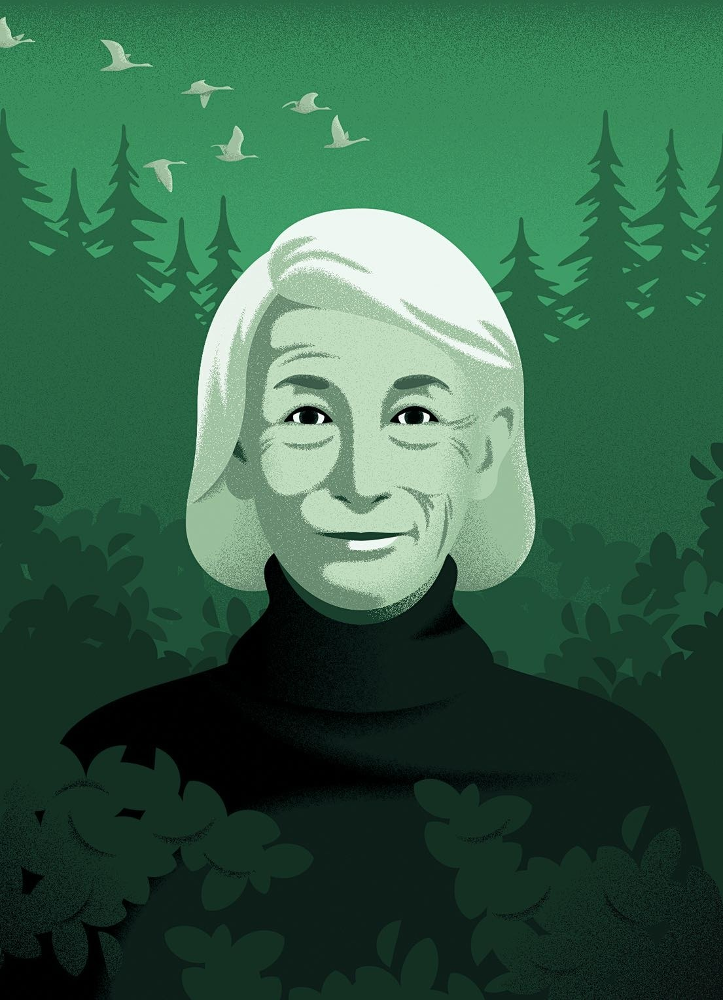

by Ruth Franklin
Oliver uses nature as a springboard to the sacred - the beating heart of her work.
Illustration by Deanna Halsall
“Mary Oliver is saving my life,” Paul Chowder, the title character of Nicholson Baker’s novel “ The Anthologist ,” scrawls in the margins of Oliver’s “New and Selected Poems, Volume One.” A struggling poet, Chowder is suffering from a severe case of writer’s block. His girlfriend, with whom he’s lived for eight years, has just left him, ostensibly because he has been unable to write the long-overdue introduction to a poetry anthology that he has been putting together. For solace and inspiration, he turns to poets who have been his touchstones—Louise Bogan, Theodore Roethke, Sara Teasdale—before discovering Oliver. In her work, he finds consolation: “I immediately felt more sure of what I was doing.” Of her poems, he says, “They’re very simple. And yet each has something.”
I don’t know exactly what a prayer is.
I do know how to pay attention, how to fall down
into the grass, how to kneel down in the grass,
how to be idle and blessed,
how to stroll through the fields,
which is what I have been doing all day.
The cadences are almost Biblical. “Attention is the beginning of devotion,” she urges elsewhere.
This article appears in the print edition of the November 27, 2017, issue, with the headline “The Art of Paying Attention.”
The danger of the President Pence
By Jane Mayer
No End in Sight to the Brexit Madness
By John Cassidy
Mueller Rents Giant Warehouse to Store Evidence Against Trump
By Andy Borowitz